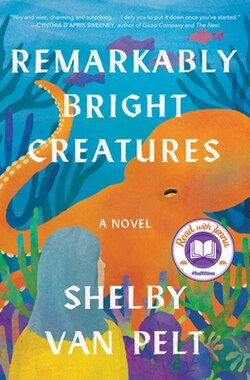
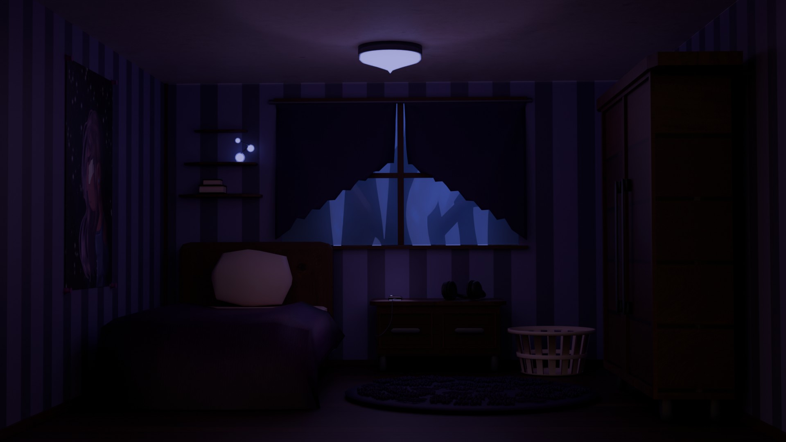
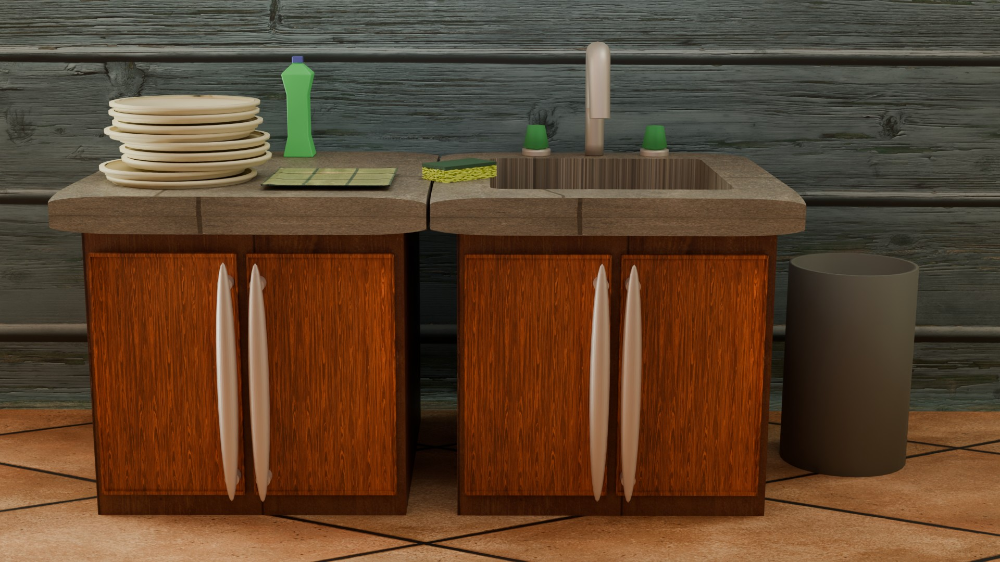
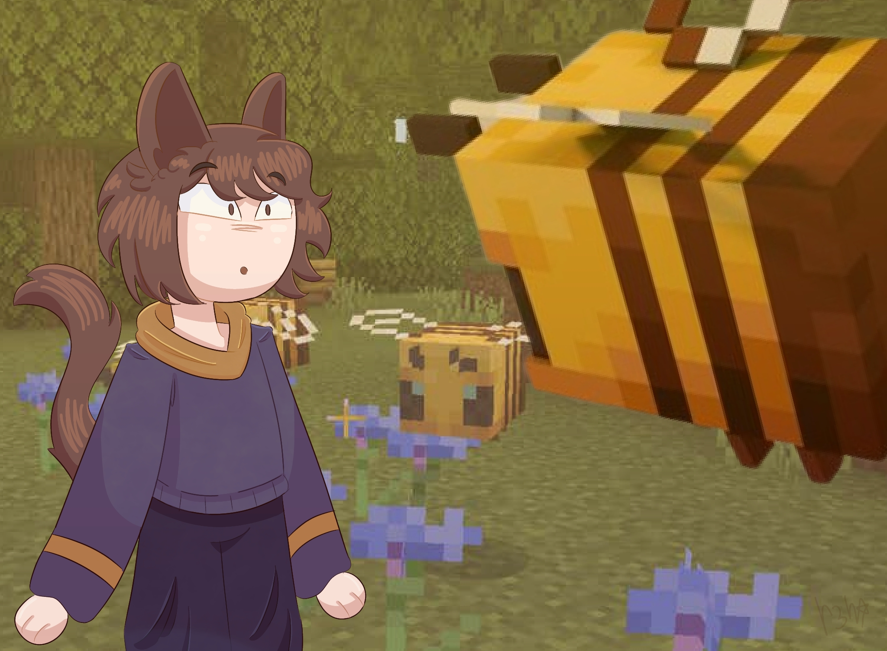
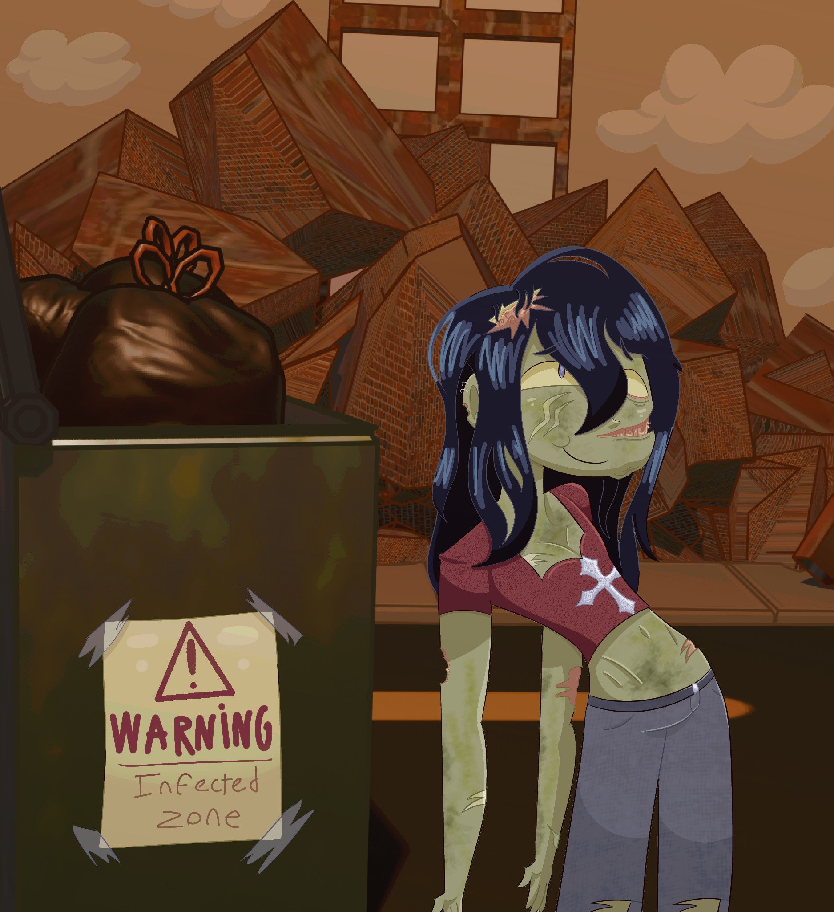

Remarkably Bright Creatures is a fiction novel published on May 3, 2022. It follows an old, grieving widow who works as a cleaner at the aquarium in her seaside town, Sowell Bay. Years ago, she lost her son, and no one figured out what happened to him. In her duties, she befriends a Giant Pacific Octopus, Marcellus. She watches him escape his enclosure every night and sit moodily in his tank. Marcellus hates people, tracks the days spent been stuck inside, and longs to return to the wild. He watches the aquarium patrons closely and only gets along with Tova. One night, while making casserole, she injures her ankle, and the aquarium is forced to hire a replacement.
Cameron is a 30-year-old troubled man searching for his dad, whom he has never met. His life is a wreck, and once he rolls into town, he begins filling in for her position at the aquarium. He lives out of an RV parked in the local grocer's yard, all while he hunts down a rich, elite man named Simon Brinks, whom he believes is his biological father.
For a while, they work together. Tova trains him to take over her job entirely, making sure the aquarium is in good hands as she prepares to move into a retirement home. She informs him of all Marcellus's escapades, and the two grow a close bond.
Eventually, Cameron locates Simon Brinks and discovers that he's, in fact, not his father. This sends him spiraling, and he angrily storms out to leave town and start anew. Meanwhile, through Marcellus's observant nature and clever hints, Tova discovers that Cameron's father is her long-lost son, who she discovers likely died in a sailing accident out with Cameron's mother. She frees Marcellus for his kindness, letting him live unshackled before he passes, and when Cameron returns the next day—having decided not to leave—she informs him of her revelation. She decides to stay in Sowell Bay to care for the aquarium's new octopus and stick by her grandson's side, and the two share a happy ending, with a Thanksgiving dinner as a family.





